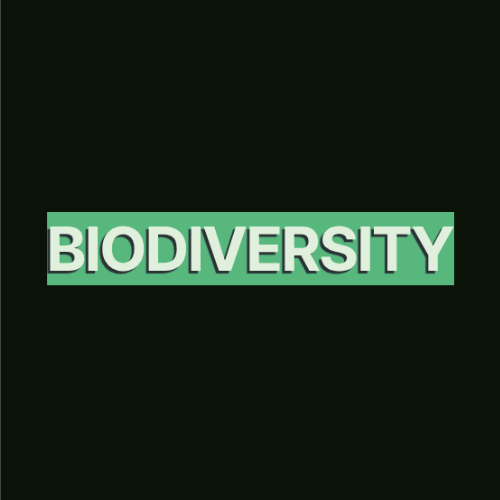

Biodiversity website

Just a simple websote that discusses and promotes ways to improve biodiversity (I made this for my science poster thingy)
Click here to view more about this project!SimpleToDo

Just a basic todo list app. I had no idea what i was doing, how version control worked and what it even was XD
Click here to view more about this project!